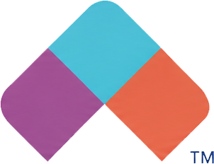

Powered by
Directory
Assets
Curriculum
Schedule
Flow
Ultrasound
Treatment
Rounds
OR
Anesia
Yakuri
Grid
Forms
Logout
Command
Patients
Board
Rooms
Client Display
Full screen
⌘K
Command center
HOSPITAL OPERATIONS
Attention center
—
Clear all
Client queue
—
Current wait by doctor
—
Balanced
Patients
Patient
Reason
Doctor
Location
Status
Priority
Arrival
Wait
No patients currently checked in.
Patients appear here after check-in.
Board
Completed Today
0
Discharged
0
Admitted
0
Euthanized
0
Rooms
—
We're here for them. You're in good hands.
Thank you for trusting us with your pet's care.
—
—
Live · Updating
Pets Currently Receiving Care

VCA Shoreline Patient Flow
Pravix Flow
Flow v1.0
Pravix, LLC © 2026
Saved
Move patient to Comfort Room?
Cancel
Move patient
Triage intake
—
Cancel
Save intake
Mark complete
Assign to
Doctor
Select an unassigned patient
Cancel
New patient…
Start intake
Shift setup…
Assign doctors
Hospital alert…
Send announcement
Print…
This view
Reminder chime
On · this screen
Talk to Flow
On · this screen
Today's shift assignments
Cancel
Save assignments
Hospital alert
Care team
Who is responsible for this patient right now.
Edit triage
—
Cancel
Save triage
Add new patient
Arrival Type
Walk-in
ER transfer
Hospitalized
Referring hospital
Transfer notes
Patient will begin directly in the Treatment area.
Patient Information
Patient name
*
Species
*
Select species
Canine
Feline
Breed
Age
y
mo
Sex
Select sex
Male (Neutered)
Female (Spayed)
Male (Intact)
Female (Intact)
Unknown
Weight
kg
lb
Owner Information
Owner name
Phone number
Priority
P1
Critical
P2
Urgent
P3
Stable
Reason for Visit
Needs Attention
Client Reported Reason
—
View original
Possible Toxin / Medication Exposure
Substance
—
Strength
—
Amount possibly ingested
—
Time of exposure
—
ASPCA Poison Control
(888) 426-4435
Client was instructed to give the ASPCA callback/reference number directly to reception.
Consent (from client check-in)
Resuscitation
Emergency stabilization
—
Signed
—
Assignments
Assign doctor
Assign location
Cancel
Create patient